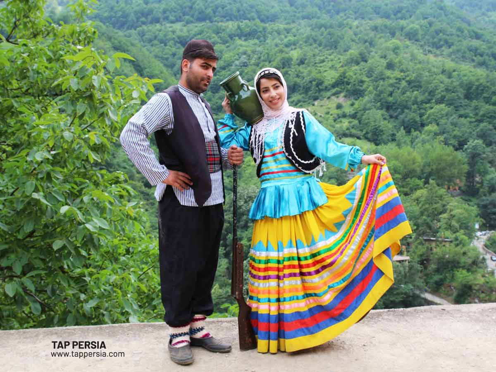
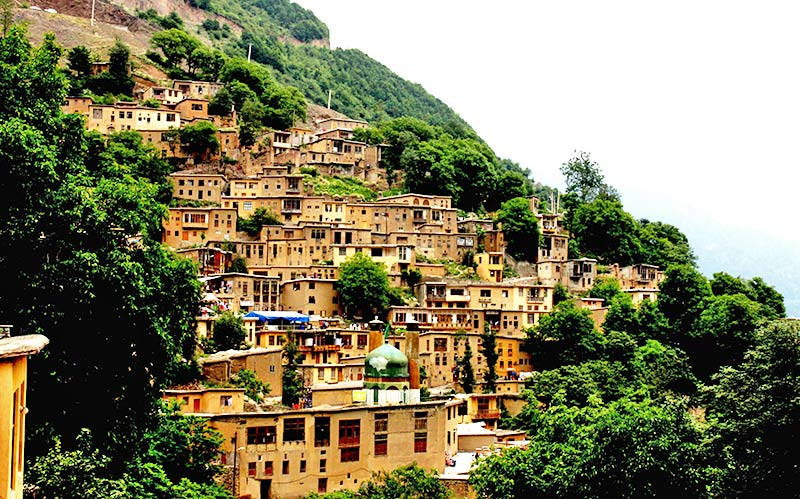
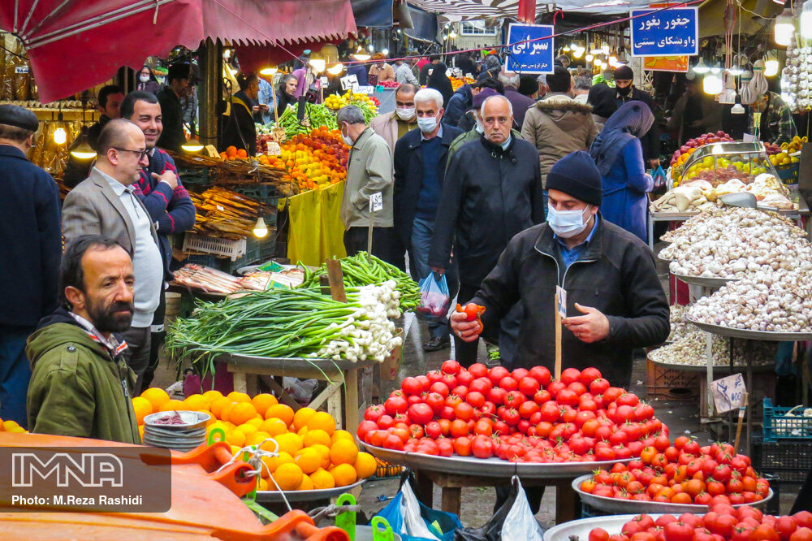

Hello, my name is Shohreh and in this website, I would like to introduce my hometown to you!
Rasht is the capital city of Gilan Province, located in northern Iran, near the southern coast of the Caspian Sea. It is one of the most important cities in the region, known for its rich history, cultural significance, and natural beauty.
Rasht has been a significant urban center for centuries, playing a role in trade between Iran and other countries, particularly Russia, due to its proximity to the Caspian Sea. The city was part of the Silk Road, which made it a hub for commerce and cultural exchange in the past. Rasht was also known as a base of support for constitutionalists during Iran's Constitutional Revolution in the early 20th century.
Rasht's cuisine is renowned for its rich flavors and use of fresh, local ingredients, particularly herbs, garlic, and seafood. Some of its most famous dishes include Mirza Ghasemi, a smoky grilled eggplant dish with tomatoes and eggs, and Baghala Ghatogh, a flavorful stew made from fava beans, dill, garlic, and eggs, served with rice. Another iconic dish is Fesenjan, a slow-cooked stew made with pomegranate paste and ground walnuts, often paired with duck or chicken. Rasht's unique culinary traditions earned it a spot as a UNESCO Creative City of Gastronomy, celebrating its importance in Iranian and global cuisine.
Shahrdari Square: The central square of Rasht, which is a focal point for social gatherings and cultural events. Rasht Museum: Showcases the cultural and historical artifacts of the Gilan region. Masouleh: A picturesque village located near Rasht, known for its stepped architecture and stunning mountain views. Anzali Lagoon: A large wetland near Rasht that is rich in biodiversity and a popular spot for birdwatching.
These bazaars are the most bustling areas of Gilan. They comprise of open and covered stalls, centers for trading merchadise and are usually located in the heart of the city. Permanent bazaars like Rasht, Astara, Talesh, Roodbar and Somiehsara are always active. Daily bazaars are also held, where the rural folk put up their goods for sale.
Today, Rasht is a vibrant city that blends its historical past with modern development. It has grown as an educational and administrative center, with universities and institutions contributing to its status as a regional hub. The city is also known for its vibrant bazaars and markets, where locals and tourists alike can enjoy traditional crafts, fresh produce, and local delicacies. Rasht's combination of natural beauty, rich history, and cultural significance makes it a unique and important city in Iran.